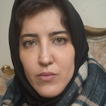

Assistant General Manager | Art Researcher
A Member of KHC (Khowledge House for Craft) Board
is to practically apply my PhD dissertation on "Ekphrasis and Art Criticism" in educational and cultural contexts.